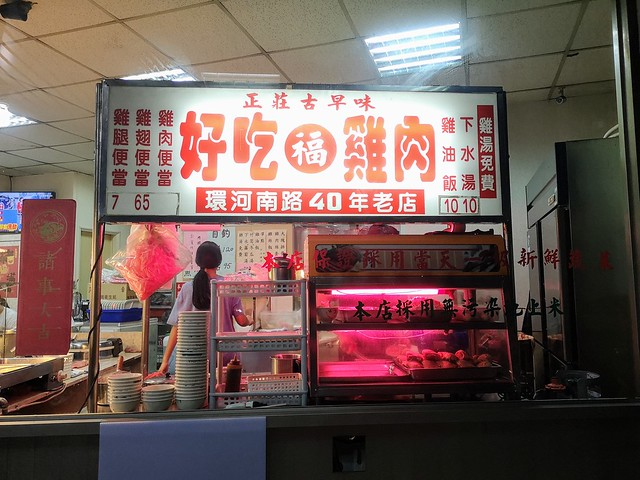
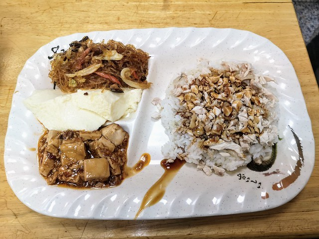

正莊古早味好吃雞肉店
google評價：4.1★
店家資訊
地址：新北市淡水區北新路113號
營業時間：早上11:00至晚上8:30，星期日休息
店家電話：02-2626-5503

推薦菜單
雞肉便當95元 雞腿便當100元 雞翅便當95元
小菜一律30元 蘿蔔湯20元 下水湯20元
雞油飯20元 竹筍湯20元
顧客評論
這家店也是用餐時間客人會很多的名店，來這裡的客大多是點雞腿便當居多。每種便當都可以選三菜，還會免費送一晚當歸雞清湯，雞腿肉肉質相當軟嫩，雞肉甚至比雞腿肉還要軟嫩，連皮一起吃也不會太膩口，白飯上面也會淋上雞油，醬油膏也很入味，如果平常不是重口味的也可以和老闆說要調整醬汁少一點等，大家也推薦配菜的蒸蛋，非常清淡。